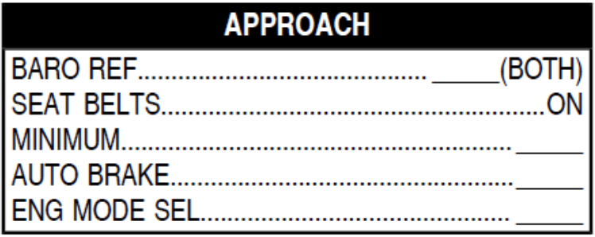

In addition to the TOD symbol on the ND, we can use a calculation to determine "how much distance we need when we have to descend a certain altitude." We'll use a rule of thumb for a 3° descent (thousands of altitude times 3 + safety margin).
For a quick calculation, insert data below according to your actual speed and altitude, desired speed and altitude when reaching the target waypoint, and the wind from the ND.
F-PLN > LAT REV > FIX INFO: As a reference for TOD, targeting the waypoint we used for the calculator above, we can insert a circle where its radius matches the calculator's result.
A quicker rule of thumb, instead of doing the math, is to look at the altitude in meters on the ISIS. We omit the last two digits and the resulting number is the same as calculating "our total altitude multiplied by 3". Finally, we can simply add 10 NM as a margin.
For example, let's imagine we are at FL150. ISIS would indicate 4572 m. This means we need 55 NM (safety margin added) to lose 15000 feet.
MCDU PROG PAGE -> BRG/DIST: As a refference, we can insert the airport (ICAO+RWY, e.g LEBL24R).
Here we also get the VERTICAL DEVIATION.
MCDU PERF DES: Includes a prediction on your descend.
- MANAGED DES: will follow constraints and manage speed/rate itself. Preffered mode.
- OP DES: will not follow CSTR, selected speed may be needed to control rate. Use when following vectors.
- V/S MODE: Least preffered mode. Use if asked by ATC. Monitor speed at all times, using selected.
OP DES MANAGEMENT:
- If above profile: increase speed + use speed brake if needed.
- If below profile: use V/S at low rate to catch profile again.
10.000 FT CHECKS (AAL):
